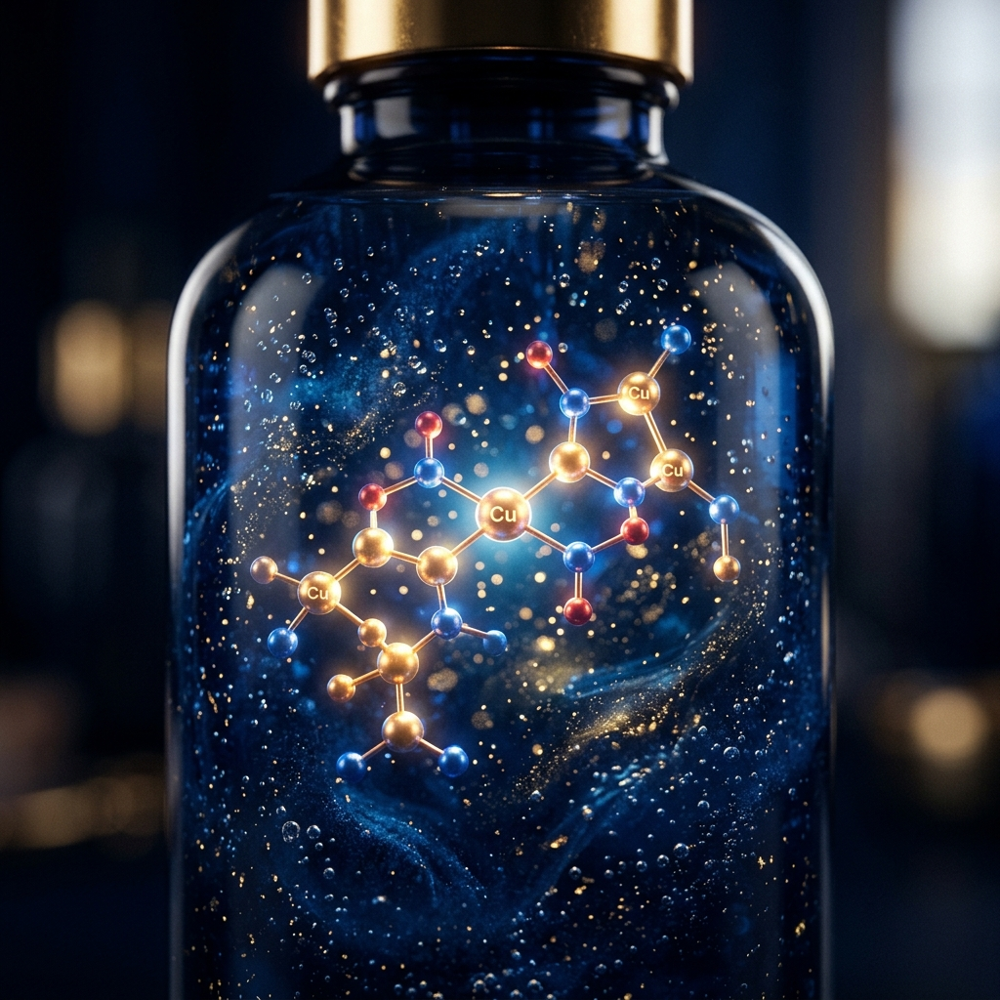

If you’ve ever looked in the mirror after a particularly rough week—maybe a week involving too much caffeine, not enough sleep, and the general stress of existing in the modern world—and thought, "I need to Benjamin Button myself right now," you aren’t alone.
The skincare industry is a multi-billion dollar behemoth fueled entirely by our collective desire to not look like a crumpled paper bag. We buy serums, creams, masks, and toners. We slap slices of cucumber over our eyes and hope for the best.
But what if the secret to youthful skin wasn't found in a botanical extract, but in a microscopic chain of amino acids?
Enter the glow peptide. More specifically, the GHK-Cu peptide.
While it sounds like the model number for a droid from Star Wars, the ghk cu peptide (scientifically known as Copper Tripeptide-1) is actually one of the most rigorously studied molecules in dermatological and regenerative science. It’s not just a temporary moisturizer; it is a biological reset button.
Let's dive into the science of how this remarkable compound works, why it's dominating the anti-aging conversation, and why researchers are so obsessed with it.
First, let’s be entirely clear: "glow peptide" is a marketing term. It’s what happens when brilliant scientists discover a compound that drastically improves skin elasticity, and clever marketers realize that "Copper-binding Tripeptide" doesn't sound very sexy on the side of an expensive serum bottle.
But while the name might be a marketing creation, the science behind the "glow" is incredibly real and highly documented.
To understand how it works, we have to look at the GHK-Cu peptide itself. GHK-Cu is naturally occurring in the human body. It is found in human plasma, saliva, and urine (though please, for the love of science, do not think too hard about that last one when applying your face cream).
When you are 20 years old, your blood is swimming with this stuff. It's one of the reasons a 20-year-old can stay up until 4 AM, eat a pizza, and still wake up with skin that looks like a porcelain doll. However, biology is cruel. By the time you hit 60 years of age, the levels of GHK-Cu in your body drop by about 60%.
Unsurprisingly, this drastic drop in the ghk-cu peptide correlates almost exactly with the time your skin decides to stop bouncing back. Fine lines appear, elasticity fades, and the skin loses its natural structural integrity.
So, what does this peptide actually do when reintroduced to the system?
The magic lies in the "Cu" part of GHK-Cu, which stands for Copper. GHK has an incredibly high affinity for copper ions. It binds to them and acts as a highly efficient biological delivery system, transporting copper safely into the cells where it’s desperately needed for enzymatic processes.
According to peer-reviewed dermatological studies published in major medical journals: "GHK-Cu possesses a multifaceted role in tissue remodeling, significantly upregulating the synthesis of collagen, elastin, and glycosaminoglycans, while simultaneously exhibiting potent anti-inflammatory and antioxidant activities."
That is a very dense sentence. Let’s translate that from Academic Science-Speak to English. The glow peptide performs three massive functions for the skin:
Collagen is the scaffolding of your skin; elastin is the rubber band that allows it to snap back. As we age, the fibroblasts (the cellular factories in your skin that make these proteins) get lazy. GHK-Cu acts like a strict foreman walking onto the factory floor. It binds to receptors and directly stimulates the fibroblasts to ramp up production of both collagen and elastin. This is what creates that tight, bouncy texture associated with youthful skin.
This is perhaps the most fascinating aspect of the ghk cu peptide. It doesn't just build new tissue; it actually helps clean up the old mess. GHK-Cu promotes the breakdown of damaged, scarred, or uneven collagen (the kind that causes wrinkles and acne scars) and replaces it with new, healthy, uniform tissue. It is literally remodeling your face from the inside out.
Inflammation is the enemy of good skin. It causes redness, accelerates aging, breaks down collagen, and exacerbates conditions like rosacea and acne. GHK-Cu acts as a powerful antioxidant and anti-inflammatory agent, calming the skin down at a cellular level. Less inflammation means a smoother, more even complexion—the literal definition of the "glow."
While the cosmetic industry has adopted the glow peptide for its aesthetic benefits, researchers are studying the ghk-cu peptide for far more profound applications.
Because of its ability to remodel tissue and stimulate blood vessel growth (angiogenesis), it is heavily researched in the context of wound healing. Studies have shown that it accelerates the healing of severe burns and surgical wounds, significantly reducing the formation of scar tissue.
Furthermore, it is making massive waves in the hair loss community. Just as it stimulates the fibroblasts in the skin, GHK-Cu has been shown to increase the size of hair follicles and stimulate blood flow to the scalp, shifting the hair cycle from the resting phase (telogen) back into the active growth phase (anagen).
Because the ghk-cu peptide is so effective, you will find it in a variety of high-end topical serums and cosmetic creams. For general anti-aging and superficial skin texture improvements, topical application is highly effective because the peptide is small enough to penetrate the stratum corneum (the outermost layer of the skin).
However, in the world of advanced research and peptide science, researchers often utilize injectable or micro-needled protocols. Micro-needling (creating tiny punctures in the skin and applying the peptide directly) allows for deeper penetration and more profound tissue remodeling.
Subcutaneous injections are also utilized in research settings for systemic healing. (Note: Injecting copper peptides without proper dilution can sting significantly, which is why researchers emphasize precision—if you are researching this route, ensure you are utilizing proper tools like a peptide calculator to determine safe concentrations).
We are standing on the edge of a new era in skincare and longevity. For decades, we relied on harsh acids to peel away the top layers of skin or invasive surgeries to pull the skin tight.
Peptide therapies represent a fundamental shift. Instead of forcing the skin to react to trauma, we are simply providing the cells with the exact biological instructions they had when we were younger.
Whether applied topically in a luxury serum or researched via more direct administration routes, the conclusion in the scientific community is the same. The glow peptide isn't just a marketing buzzword; it’s a fundamental biological trigger.
So, while we can't actually reverse time or completely stop the clock, the ghk cu peptide might just be the closest thing biology has given us to a "Ctrl+Z" for our skin. And honestly, in the battle against aging, we will take all the biological shortcuts we can get.